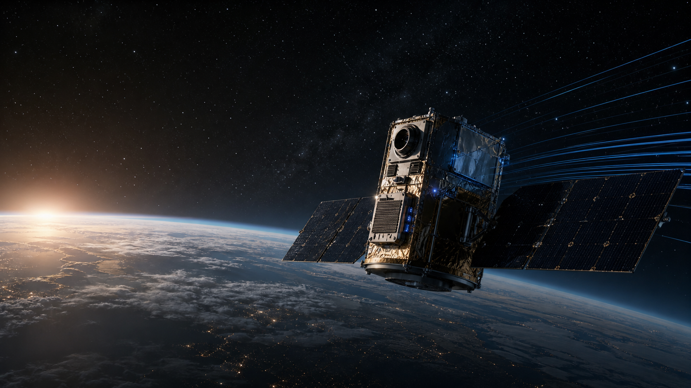

Compact Models
Small, efficient models tuned for constrained compute, low power, and predictable latency.

Space Ready AI
We use space as the forcing function to build lightweight, auditable AI for mission-critical systems with limited compute, limited power, intermittent communications, and high-latency operations.
The Wedge
Space Ready AI is designed for systems that cannot rely on constant cloud access, abundant power, easy maintenance, or forgiving failure modes. The standard is simple: when autonomy matters and the link goes dark, the AI still needs to behave predictably.
Repeatable Deployment
Every mission changes the data and hardware profile. The deployment pattern stays repeatable.
Small, efficient models tuned for constrained compute, low power, and predictable latency.
Mission-specific knowledge packaged for disconnected environments and changing context.
Auditable policies, bounded behavior, validation gates, and escalation paths for critical decisions.
Deployable across flight hardware, ground systems, simulators, and terrestrial edge platforms.
Operational visibility into model behavior, system health, drift, confidence, and mission outcomes.
Scenario testing, assurance evidence, and repeatable evaluation before and during deployment.
Market Expansion
The same architecture applies wherever autonomy must operate in disconnected, rugged, high-consequence environments.
Commercial Model
Phase 1
Embed with early customers where reliability, validation, and mission assurance are worth premium services revenue.
Phase 2
Convert repeatable deployment, monitoring, updates, and assurance workflows into a licensed software platform.
Recurring
The revenue expands as customers need evidence, uptime, and controlled AI improvement across longer-lived assets.
TalonSpace